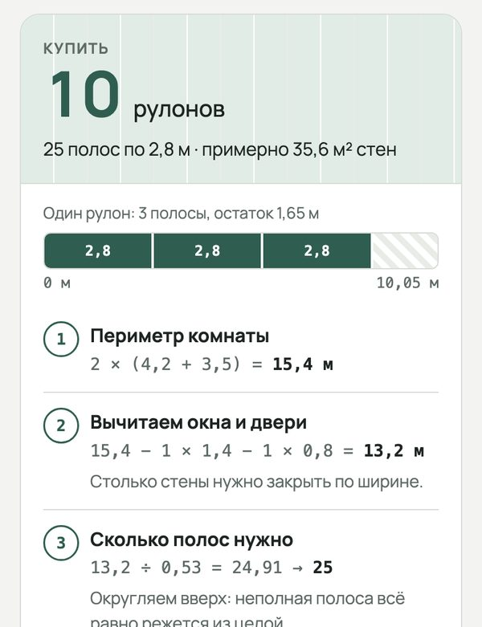

Нужны доступная почта и мобильный номер, соответствующий правилам Claude.
До регистрации проверь поддерживаемые страны. Claude требует использование из поддерживаемого региона.
Открой Claude и выбери доступный вход Google или по почте. Подтверди письмо, если его запросили.
На проверке телефона укажи собственный подходящий мобильный номер с кодом страны. Введи последний шестизначный код из SMS.
Если код не приходит, подожди несколько минут и используй повторную отправку по инструкции экрана. Нужен номер, к которому ты сохранишь доступ. После входа начни новый разговор.
Claude не принимает VoIP, Google Voice, стационарные и некоторые номера, выданные приложениями. В справке рекомендован долгосрочный доступ; самостоятельно заменить привязанный номер нельзя. Дополнительные проверки выполняй только внутри официального сервиса.
Подойдёт почта, к которой у тебя постоянный доступ. Gmail с адресом @gmail.com — один из вариантов; универсального требования именно к окончанию «.com» у этих инструментов нет.
Если почта уже есть, сначала попробуй её или вход через свой Google/Apple-аккаунт.
Для нового Google-аккаунта открой форму регистрации Google. Выбери личный аккаунт, заполни имя и данные, предложенные формой, выбери адрес и пароль.
На телефоне можно открыть Gmail → значок профиля → добавить аккаунт → Google → создать аккаунт. Если регистрация в браузере не получается, это альтернативный путь, а не гарантия отсутствия проверок.
Пройди проверки, которые запросит Google. Добавь способ восстановления и сохрани данные входа у себя. Google также позволяет использовать существующую почту другого сервиса.
Проверь написание адреса, папку спама и последнее письмо с кодом.
Используй тот же способ входа, что при регистрации. Вход через Google и вход по другой почте могут вести в разные аккаунты.
Попробуй другой браузер или устройство. Не повторяй запросы кода непрерывно: дождись срока на экране.
Если сервис сообщает о неподдерживаемой стране или типе аккаунта, смена почты доступ не вернёт. Проверь официальные условия по ссылке выше.
Claude умеет делать не только текст, а рабочую вещь — «артефакт». Он открывается рядом с чатом: поля, кнопки, расчёт. Через пару минут у тебя будет калькулятор обоев, с которым не стыдно идти в магазин. Программировать не нужно. А учимся главному с любыми расчётами: проверить одну строку руками и один крайний случай.

Калькулятор, который Claude сделал по запросу из урока. Так выглядит результат на телефоне.
Шаг 1. Попроси калькулятор
Запрос
Сделай калькулятор обоев — артефакт, который работает прямо здесь. Я ввожу длину, ширину и высоту комнаты, сколько окон и дверей, ширину и длину рулона. Он пишет, сколько рулонов купить, и показывает расчёт по шагам. Всё по-русски, удобно на телефоне.
Открой claude.ai, вставь запрос и отправь. Кнопки у сайта на английском, а отвечает Claude по-русски
Через полторы минуты справа открылась панель с калькулятором — это и есть артефакт
Впиши размеры своей комнаты: результат пересчитывается сразу
Что пришло у нас
Claude сам выбрал правильный способ — «по полосам: так считают в магазинах и так клеят на самом деле». Добавил запас на подрезку, поле «раппорт» для обоев с рисунком и запасной рулон. Это важнее, чем кажется. Если считать по площади, для нашей комнаты выйдет 7 рулонов, а по полосам — 9. Из рулона выходит три полосы, остаток в 1,65 метра уходит в обрезки. Два рулона не хватило бы.
Шаг 2. Проверь одну строку руками
Весь расчёт пересчитывать не нужно. Возьми строку, от которой зависит итог, — «Полос из одного рулона»:
Проверка за минуту
ПолосаВысота комнаты + запас: 2,7 + 0,1 = 2,8 м
Из рулона10,05 ÷ 2,8 = 3,59 — значит, 3 целые полосы
РулоновПолос нужно 25: 25 ÷ 3 = 8,33 — значит, 9
СверьВ калькуляторе те же числа
Мы проверили калькулятор роботом на пяти комнатах — итог везде совпал с ручным расчётом.
Шаг 3. Крайний случай
Поставь высоту 3,4 — как в старом доме. Полоса станет 3,5 метра, и из рулона выйдет только две. У нас калькулятор показал 14 рулонов вместо 10 — и это верно. Крайний случай проверяют, чтобы убедиться, что расчёт меняется так, как должен, а не выдаёт одно и то же.
Если что-то не так
Калькулятор не открылся
Попроси: «Сделай это артефактом, чтобы он работал прямо в чате»
Итог не сходится с твоим расчётом
Опиши признак: «При высоте 3,4 из рулона выходит 2 полосы, а калькулятор считает 3. Исправь только это»
Нужно для обоев с рисунком
Найди на этикетке раппорт и впиши его в сантиметрах: полоса удлинится, чтобы рисунок сошёлся
Хочется посчитать краску или плитку
Тот же запрос, другие поля: «Калькулятор краски: площадь стен, слои, расход на литр»
Итоги
Просишь у Claude рабочий инструмент — артефакт
Видишь расчёт по шагам, а не одно число
Сверяешь руками строку, от которой зависит итог
Проверяешь крайний случай: меняется ли результат как должен
Теперь твоя очередь
Сделай калькулятор под свою задачу: обои, краска, плитка, ламинат или стоимость заказа. Проверь одну строку руками и один крайний случай.
Калькулятор работает прямо в чате
Расчёт показан по шагам
Одна строка совпала с ручным расчётом
Крайний случай меняет итог как должен
Урок рассчитан на сайт claude.ai; у нас интерфейс был на английском. Названия кнопок могут отличаться в приложении и после обновлений. Подписка на наше обучение не включает платные тарифы нейросетей.
Claude — запрос урока проверен 3 октября 2026. Калькулятор проверен роботом на пяти комнатах против ручного расчёта. Артефакты есть и на бесплатном плане — справка Claude, сверено 3 октября 2026.
Что дальше
Следующий урок — «Настрой Claude: тон и правила». Сохранишь персональные предпочтения и проверишь их на письме.